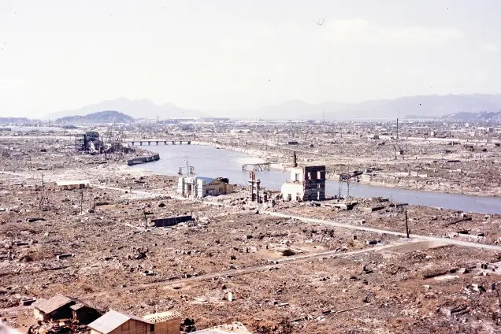

Hiroshima era um importante centro japonês quando, em 6 de agosto de 1945, os EUA lançaram a bomba atômica "Little Boy". A explosão destruiu a cidade, matando cerca de 140 mil pessoas instantaneamente ou devido à radiação.

Anos depois, Hiroshima se reconstruiu e se tornou um símbolo da paz. O Memorial da Paz e o Museu de Hiroshima lembram a tragédia e promovem a luta contra armas nucleares.